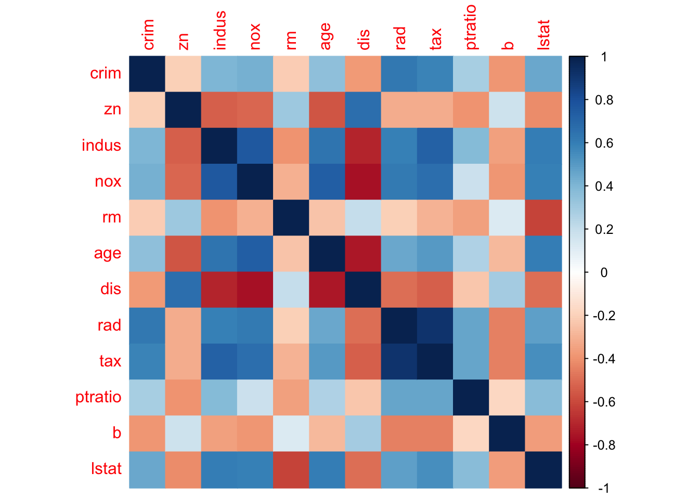
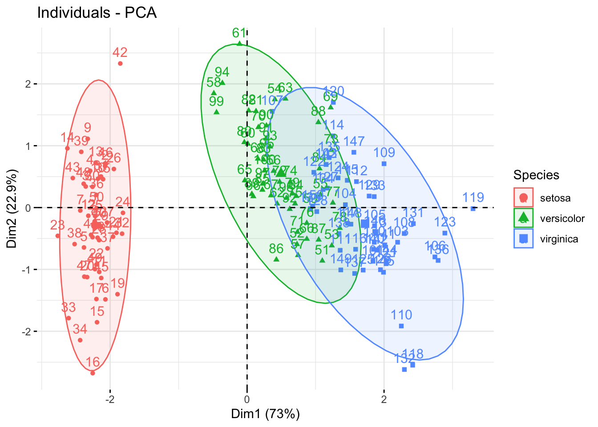

Chapter 5 Everyday exploratory data analysis
Before diving straight into complex modeling tasks, many downstream failures and oversights can be avoided with a broad, preliminary look at the data. Exploratory data analysis (EDA) doesn’t aim to answer a specific question or a hypothesis, but seeks to find general, interesting trends and quirks in the data. Finding and identifying outliers, understanding data formats, and investigating the distribution of the data are all components of EDA. There is no one set rule or protocol, but this chapter aims to follow a typical EDA workflow working with continuous, categorical, and ordinal data.
library(tidyverse)
library(mlbench)5.1 Workflow 1: continuous data
For this exercise I will use the Boston Housing dataset from mlbench, which is a common dataset used in ML tutorials. It consists of numerical features (except one column chas, which is a binary dummy variable) and a continuous target variable medv - median value of homes.
data("BostonHousing")
df <- as_tibble(BostonHousing)The function str() conveniently returns the structure of the dataset and as we can see, it returns the nature of each column.
str(df)## tibble [506 × 14] (S3: tbl_df/tbl/data.frame)
## $ crim : num [1:506] 0.00632 0.02731 0.02729 0.03237 0.06905 ...
## $ zn : num [1:506] 18 0 0 0 0 0 12.5 12.5 12.5 12.5 ...
## $ indus : num [1:506] 2.31 7.07 7.07 2.18 2.18 2.18 7.87 7.87 7.87 7.87 ...
## $ chas : Factor w/ 2 levels "0","1": 1 1 1 1 1 1 1 1 1 1 ...
## $ nox : num [1:506] 0.538 0.469 0.469 0.458 0.458 0.458 0.524 0.524 0.524 0.524 ...
## $ rm : num [1:506] 6.58 6.42 7.18 7 7.15 ...
## $ age : num [1:506] 65.2 78.9 61.1 45.8 54.2 58.7 66.6 96.1 100 85.9 ...
## $ dis : num [1:506] 4.09 4.97 4.97 6.06 6.06 ...
## $ rad : num [1:506] 1 2 2 3 3 3 5 5 5 5 ...
## $ tax : num [1:506] 296 242 242 222 222 222 311 311 311 311 ...
## $ ptratio: num [1:506] 15.3 17.8 17.8 18.7 18.7 18.7 15.2 15.2 15.2 15.2 ...
## $ b : num [1:506] 397 397 393 395 397 ...
## $ lstat : num [1:506] 4.98 9.14 4.03 2.94 5.33 ...
## $ medv : num [1:506] 24 21.6 34.7 33.4 36.2 28.7 22.9 27.1 16.5 18.9 ...Immediately we see that the column chas is a factor. As previously iterated, this column contains a dummy variable which indicates 1 if tract bounds river and 0 if otherwise. As expected, vapply() output says this is the only non-numerical column. We will have to be aware of this.
vapply(df, is.numeric, logical(1))## crim zn indus chas nox rm
## TRUE TRUE TRUE FALSE TRUE TRUE
## age dis rad tax ptratio b
## TRUE TRUE TRUE TRUE TRUE TRUE
## lstat medv
## TRUE TRUEGenerally, features (also as known as predictors) tend to show some degree of correlations with one another. This can be identified with cor(), which returns a correlation matrix.
cor_res <- cor(df %>% select(-c(medv, chas)))
head(cor_res)## crim zn indus nox
## crim 1.0000000 -0.2004692 0.4065834 0.4209717
## zn -0.2004692 1.0000000 -0.5338282 -0.5166037
## indus 0.4065834 -0.5338282 1.0000000 0.7636514
## nox 0.4209717 -0.5166037 0.7636514 1.0000000
## rm -0.2192467 0.3119906 -0.3916759 -0.3021882
## age 0.3527343 -0.5695373 0.6447785 0.7314701
## rm age dis rad
## crim -0.2192467 0.3527343 -0.3796701 0.6255051
## zn 0.3119906 -0.5695373 0.6644082 -0.3119478
## indus -0.3916759 0.6447785 -0.7080270 0.5951293
## nox -0.3021882 0.7314701 -0.7692301 0.6114406
## rm 1.0000000 -0.2402649 0.2052462 -0.2098467
## age -0.2402649 1.0000000 -0.7478805 0.4560225
## tax ptratio b lstat
## crim 0.5827643 0.2899456 -0.3850639 0.4556215
## zn -0.3145633 -0.3916785 0.1755203 -0.4129946
## indus 0.7207602 0.3832476 -0.3569765 0.6037997
## nox 0.6680232 0.1889327 -0.3800506 0.5908789
## rm -0.2920478 -0.3555015 0.1280686 -0.6138083
## age 0.5064556 0.2615150 -0.2735340 0.6023385The package corrplot elegantly outputs a visualization using the correlation matrix:
library(corrplot)
corrplot(cor_res, method = 'color')
Now it’s time to check the distribution of the features. For this I want to make a boxplot, but for that I need to reshape the dataset first. As seen in Chapter 1, tidyr::pivot_longer() can be used to convert the data into long format.
dfm <- df %>% select(-c(medv, chas)) %>%
pivot_longer(everything(), names_to = 'Feature', values_to = 'Value')
dfm## # A tibble: 6,072 × 2
## Feature Value
## <chr> <dbl>
## 1 crim 0.00632
## 2 zn 18
## 3 indus 2.31
## 4 nox 0.538
## 5 rm 6.58
## 6 age 65.2
## 7 dis 4.09
## 8 rad 1
## 9 tax 296
## 10 ptratio 15.3
## # … with 6,062 more rowsNow it’s trivial to use ggplot() to make the boxplot:
ggplot(dfm, aes(x = Feature, y = Value)) +
geom_boxplot(aes(fill = Feature), alpha = .6) +
theme_bw() + theme(legend.position = 'none')It looks like the scales for the features are not consistent. This is common in real-life data and for most ML algorithms, features need to be preprocessed. I will cover this in the future chapters, but in brief, we can calculate the z-score as such for each predictor:
zs <- function(x){
(x - mean(x)) / sd(x)
}
df_s <- df %>% select(-c(medv, chas)) %>%
mutate(across(everything(), zs))
df_s## # A tibble: 506 × 12
## crim zn indus nox rm age dis
## <dbl> <dbl> <dbl> <dbl> <dbl> <dbl> <dbl>
## 1 -0.419 0.285 -1.29 -0.144 0.413 -0.120 0.140
## 2 -0.417 -0.487 -0.593 -0.740 0.194 0.367 0.557
## 3 -0.417 -0.487 -0.593 -0.740 1.28 -0.266 0.557
## 4 -0.416 -0.487 -1.31 -0.834 1.02 -0.809 1.08
## 5 -0.412 -0.487 -1.31 -0.834 1.23 -0.511 1.08
## 6 -0.417 -0.487 -1.31 -0.834 0.207 -0.351 1.08
## 7 -0.410 0.0487 -0.476 -0.265 -0.388 -0.0702 0.838
## 8 -0.403 0.0487 -0.476 -0.265 -0.160 0.978 1.02
## 9 -0.396 0.0487 -0.476 -0.265 -0.930 1.12 1.09
## 10 -0.400 0.0487 -0.476 -0.265 -0.399 0.615 1.33
## # … with 496 more rows, and 5 more variables:
## # rad <dbl>, tax <dbl>, ptratio <dbl>, b <dbl>,
## # lstat <dbl>Now the boxplots look more uniform:
df_sm <- df_s %>% pivot_longer(everything(),
names_to = 'Feature',
values_to = 'Value')
ggplot(df_sm, aes(x = Feature, y = Value)) +
geom_boxplot(aes(fill = Feature), alpha = .6) +
theme_bw() + theme(legend.position = 'none')How about our target variable - the housing price? This column is also continuous so let’s check the shape of this distribution using a histogram:
hist(df$medv)It looks like the mean value for medv is at around 22 to 23. Changing the number of bins can give us a better look, if needed.
Since the target variable is continuous, we can easily fit a simple linear model to check for relationships between the predictors and the target. This part may be delving a bit deeper than our initial goal of EDA, but it’s still useful to make us aware of possible relationships in our data.
df_num <- df %>% select(-chas)
lm_mod <- lm(medv ~ ., data = df_num)
summary(lm_mod)##
## Call:
## lm(formula = medv ~ ., data = df_num)
##
## Residuals:
## Min 1Q Median 3Q Max
## -13.3968 -2.8103 -0.6455 1.9141 26.3755
##
## Coefficients:
## Estimate Std. Error t value Pr(>|t|)
## (Intercept) 36.891960 5.146516 7.168 2.79e-12 ***
## crim -0.113139 0.033113 -3.417 0.000686 ***
## zn 0.047052 0.013847 3.398 0.000734 ***
## indus 0.040311 0.061707 0.653 0.513889
## nox -17.366999 3.851224 -4.509 8.13e-06 ***
## rm 3.850492 0.421402 9.137 < 2e-16 ***
## age 0.002784 0.013309 0.209 0.834407
## dis -1.485374 0.201187 -7.383 6.64e-13 ***
## rad 0.328311 0.066542 4.934 1.10e-06 ***
## tax -0.013756 0.003766 -3.653 0.000287 ***
## ptratio -0.990958 0.131399 -7.542 2.25e-13 ***
## b 0.009741 0.002706 3.600 0.000351 ***
## lstat -0.534158 0.051072 -10.459 < 2e-16 ***
## ---
## Signif. codes:
## 0 '***' 0.001 '**' 0.01 '*' 0.05 '.' 0.1 ' ' 1
##
## Residual standard error: 4.787 on 493 degrees of freedom
## Multiple R-squared: 0.7355, Adjusted R-squared: 0.7291
## F-statistic: 114.3 on 12 and 493 DF, p-value: < 2.2e-16An ANOVA table on the fitted model gives us additional info such as the mean sum of squares:
anova(lm_mod)## Analysis of Variance Table
##
## Response: medv
## Df Sum Sq Mean Sq F value Pr(>F)
## crim 1 6440.8 6440.8 281.0564 < 2.2e-16 ***
## zn 1 3554.3 3554.3 155.1005 < 2.2e-16 ***
## indus 1 2551.2 2551.2 111.3283 < 2.2e-16 ***
## nox 1 28.7 28.7 1.2507 0.26397
## rm 1 11794.6 11794.6 514.6823 < 2.2e-16 ***
## age 1 74.1 74.1 3.2330 0.07278 .
## dis 1 1858.3 1858.3 81.0890 < 2.2e-16 ***
## rad 1 46.9 46.9 2.0447 0.15337
## tax 1 454.1 454.1 19.8158 1.055e-05 ***
## ptratio 1 1458.7 1458.7 63.6538 1.046e-14 ***
## b 1 650.0 650.0 28.3656 1.529e-07 ***
## lstat 1 2506.8 2506.8 109.3905 < 2.2e-16 ***
## Residuals 493 11297.8 22.9
## ---
## Signif. codes:
## 0 '***' 0.001 '**' 0.01 '*' 0.05 '.' 0.1 ' ' 1The broom package is useful in converting summaries of model objects into workable tibbles:
library(broom)
tidy(lm_mod)## # A tibble: 13 × 5
## term estimate std.error statistic p.value
## <chr> <dbl> <dbl> <dbl> <dbl>
## 1 (Intercept) 36.9 5.15 7.17 2.79e-12
## 2 crim -0.113 0.0331 -3.42 6.86e- 4
## 3 zn 0.0471 0.0138 3.40 7.34e- 4
## 4 indus 0.0403 0.0617 0.653 5.14e- 1
## 5 nox -17.4 3.85 -4.51 8.13e- 6
## 6 rm 3.85 0.421 9.14 1.66e-18
## 7 age 0.00278 0.0133 0.209 8.34e- 1
## 8 dis -1.49 0.201 -7.38 6.64e-13
## 9 rad 0.328 0.0665 4.93 1.10e- 6
## 10 tax -0.0138 0.00377 -3.65 2.87e- 4
## 11 ptratio -0.991 0.131 -7.54 2.25e-13
## 12 b 0.00974 0.00271 3.60 3.51e- 4
## 13 lstat -0.534 0.0511 -10.5 2.94e-23Since we seem to have linear relationships across our dataset, we can use scatterplots in combination with correlation analysis to generate useful visualizations:
library(ggpubr)
ggplot(df_num, aes(x = rm, y = medv)) +
geom_point() +
geom_smooth(method = 'lm') + theme_bw() +
stat_cor(method = 'pearson')## `geom_smooth()` using formula = 'y ~ x'Oops! Even though it’s clear there is indeed a linear relationship between the number of rooms rm and the housing price medv, it looks like there is a strange behaviour at medv == 50. Indeed, it looks like the measurement was artificially capped at 50 and there are 16 instances where this value is found:
length(df$medv[df$medv == 50])## [1] 16Since we’re only concerned with EDA for now, we won’t delve further into how we’re going to tackle this. Of course, if we are training a prediction model, we probably shouldn’t leave the values capped like that as is. EDA have made us aware of this before we started high-level modeling tasks, and that’s good.
Let’s circle back to the dummy variable chas. Since this is a factor, let’s treat them as groups and compare the distribution of medv using a Wilcoxon test:
df_chas <- df %>% select(medv, chas)
ggplot(df_chas, aes(x = chas, y = medv)) +
geom_boxplot(aes(fill = chas), alpha = .6) +
theme_bw() + theme(legend.position = 'none') +
stat_compare_means(method = 'wilcox')Boxplots are nice but violin plots give us a further look at the shape of the distributions: this way we can actually see that medv values are capped at 50.
ggplot(df_chas, aes(x = chas, y = medv)) +
geom_violin(aes(fill = chas), alpha = .6) +
theme_bw() + theme(legend.position = 'none') +
stat_compare_means(method = 'wilcox')5.2 Workflow 2: dates and ordinal data
For this part I will pull the Ozone data from mlbench which has the following three columns as the first three: integers coding for the month, integers coding for the day of the month, and integers coding for the day of the week, with Monday coded as the first day (i.e., 1 = Mon., 2 = Tues.,…). The rest of the columns correspond to various weather measurements as continuous values such as the temperature, humidity, and visibility.
data('Ozone')
df <- as_tibble(Ozone)
df## # A tibble: 366 × 13
## V1 V2 V3 V4 V5 V6 V7 V8
## <fct> <fct> <fct> <dbl> <dbl> <dbl> <dbl> <dbl>
## 1 1 1 4 3 5480 8 20 NA
## 2 1 2 5 3 5660 6 NA 38
## 3 1 3 6 3 5710 4 28 40
## 4 1 4 7 5 5700 3 37 45
## 5 1 5 1 5 5760 3 51 54
## 6 1 6 2 6 5720 4 69 35
## 7 1 7 3 4 5790 6 19 45
## 8 1 8 4 4 5790 3 25 55
## 9 1 9 5 6 5700 3 73 41
## 10 1 10 6 7 5700 3 59 44
## # … with 356 more rows, and 5 more variables:
## # V9 <dbl>, V10 <dbl>, V11 <dbl>, V12 <dbl>,
## # V13 <dbl>It’s not necessary in this case, but since we are working with dates let’s make the date labels easier to read. Using lubridate I will convert the month labels into a factor with character levels. Then using base R’s weekdays() I will convert the days of the week to characters as well.
library(lubridate)
df <- df %>%
mutate(V1 = lubridate::month(as.numeric(V1),
label = TRUE)) %>%
mutate(V3 = weekdays(.Date(4:10))[df$V3])
df## # A tibble: 366 × 13
## V1 V2 V3 V4 V5 V6 V7 V8
## <ord> <fct> <chr> <dbl> <dbl> <dbl> <dbl> <dbl>
## 1 Jan 1 Thursday 3 5480 8 20 NA
## 2 Jan 2 Friday 3 5660 6 NA 38
## 3 Jan 3 Saturday 3 5710 4 28 40
## 4 Jan 4 Sunday 5 5700 3 37 45
## 5 Jan 5 Monday 5 5760 3 51 54
## 6 Jan 6 Tuesday 6 5720 4 69 35
## 7 Jan 7 Wednesday 4 5790 6 19 45
## 8 Jan 8 Thursday 4 5790 3 25 55
## 9 Jan 9 Friday 6 5700 3 73 41
## 10 Jan 10 Saturday 7 5700 3 59 44
## # … with 356 more rows, and 5 more variables:
## # V9 <dbl>, V10 <dbl>, V11 <dbl>, V12 <dbl>,
## # V13 <dbl>df <- df %>%
mutate(V3 = factor(V3, levels=
weekdays(.Date(4:10))))Another thing to note - since this data is temporal data, there’s a big chance there are many missing values due to external factors. Let’s see:
vapply(df, function(x) sum(is.na(x)), double(1))## V1 V2 V3 V4 V5 V6 V7 V8 V9 V10 V11 V12 V13
## 0 0 0 5 12 0 15 2 139 15 1 14 0Column V9, which correspond to temperature measured in El Monte, CA has 139 missing values! Immediately you could argue we can replace these with 0s but remember the nature of this data - a 0 degree weather has actual meaning. Imputation cases like this are tricky and that will be important during modeling tasks.
Since we are working with ordinal data - in our case, data points over time, it makes sense to make a trendline. Using facet_wrap(), in ggplot(), I can make a grid based on the time of the month; here I am plotting V8 - temperature measured at Sandburg, CA - versus V2 - day of the month.
ggplot(df, aes(x = V2, y = V8)) +
geom_point() + geom_line(aes(group = 1)) +
facet_wrap(~ V1) + theme_bw() +
theme(axis.text.x = element_blank())For a visual reference, let’s see what happens when we plot the temperature at El Monte instead, with all those missing values:
ggplot(df, aes(x = V2, y = V9)) +
geom_point() + geom_line(aes(group = 1)) +
facet_wrap(~ V1) + theme_bw() +
theme(axis.text.x = element_blank())
Adding multiple trendlines is easy using the group = aesthetic within geom_line(); here I will plot V7 and V11 together - humidity and pressure gradient measured at LAX, respectively:
df_2 <- df %>% select(V1, V2, V7, V11) %>%
pivot_longer(c(V7, V11),
names_to = 'Measurement',
values_to = 'Values')
ggplot(df_2, aes(x = V2, y = Values)) +
geom_point() +
geom_line(aes(group = Measurement,
color = Measurement)) +
facet_wrap(~ V1) + theme_bw() +
theme(legend.position = 'bottom',
axis.text.x = element_blank())
Working with grouped data such as this means an ANOVA tells us whether there is a significant variation across the group means relative to the within-group means:
aov_mod <- aov(V8 ~ V1, data = df)
summary(aov_mod)## Df Sum Sq Mean Sq F value Pr(>F)
## V1 11 43504 3955 45.67 <2e-16 ***
## Residuals 352 30483 87
## ---
## Signif. codes:
## 0 '***' 0.001 '**' 0.01 '*' 0.05 '.' 0.1 ' ' 1
## 2 observations deleted due to missingnessA nice way to visualize an ANOVA result is by using grouped boxplots; here I am adding the Kruskal-Wallis ANOVA result from ggpubr():
ggplot(df, aes(x = V1, y = V8)) +
geom_boxplot(aes(fill = V1), alpha = .6) +
theme_bw() + xlab('') +
theme(legend.position = 'none') +
stat_compare_means(method = 'kruskal')Instead of an ANOVA, I can also run pairwise Wilcoxon tests against a reference group. Here I will make January the reference group:
ggplot(df, aes(x = V1, y = V8)) +
geom_boxplot(aes(fill = V1), alpha = .6) +
theme_bw() + xlab('') +
theme(legend.position = 'none') +
stat_compare_means(method = 'wilcox',
ref.group = 'Jan',
label = 'p.signif')## Warning: Removed 2 rows containing non-finite values
## (`stat_boxplot()`).## Warning: Removed 2 rows containing non-finite values
## (`stat_compare_means()`).If we want to calculate values based on groups, dplyr’s group_by() is useful, as seen in Chapter 1:
df %>% group_by(V1) %>%
summarise(across(V4:V13, ~ mean(.x, na.rm = TRUE),
.names = 'mean_{col}'))## # A tibble: 12 × 11
## V1 mean_V4 mean_V5 mean_V6 mean_V7 mean_V8
## <ord> <dbl> <dbl> <dbl> <dbl> <dbl>
## 1 Jan 5.45 5745. 4.23 37.4 53.7
## 2 Feb 7.14 5659. 5.69 56.9 47.0
## 3 Mar 8.84 5656. 5.03 49.8 49.5
## 4 Apr 10 5637. 5.97 58.2 51.7
## 5 May 15.8 5753. 5.48 70.9 68.4
## 6 Jun 17.1 5792 5.2 63.3 73.6
## 7 Jul 20.2 5862. 5.29 72.8 80.5
## 8 Aug 17.5 5830. 5.23 67.6 74.4
## 9 Sep 12.4 5797. 5.77 73.6 69.2
## 10 Oct 12.6 5796. 4.90 62.7 64.5
## 11 Nov 7.67 5790. 3.3 50.1 58.8
## 12 Dec 4.06 5725 2.42 36.1 50.2
## # … with 5 more variables: mean_V9 <dbl>,
## # mean_V10 <dbl>, mean_V11 <dbl>, mean_V12 <dbl>,
## # mean_V13 <dbl>df %>% group_by(V1, V3) %>%
summarise(mean_hum_LAX = mean(V7, na.rm=T))## `summarise()` has grouped output by 'V1'. You can
## override using the `.groups` argument.## # A tibble: 84 × 3
## # Groups: V1 [12]
## V1 V3 mean_hum_LAX
## <ord> <fct> <dbl>
## 1 Jan Monday 56
## 2 Jan Tuesday 35
## 3 Jan Wednesday 19
## 4 Jan Thursday 21.8
## 5 Jan Friday 44.8
## 6 Jan Saturday 41.6
## 7 Jan Sunday 46.8
## 8 Feb Monday 58.2
## 9 Feb Tuesday 69.2
## 10 Feb Wednesday 63.2
## # … with 74 more rows5.3 Visualization of clusters
Clustering and dimensionality reduction tasks can give us a visual look at groupings in the data. The concept of unsupervised clustering and dimensionality reduction techniques will be covered in one of the future chapters, but this is a high-level glance that will be useful in quickly identifying clusters:
data("iris")
df <- as_tibble(iris)For PCA, I will use the useful factoextra package for visualization. The first step is to make sure that the input for PCA is numeric; this means that, for example, in the iris dataset, I need to exclude the column containing the target labels. Additionally, I am declaring the target label column as a factor, since I want to label the data points with these labels in the PCA plot.
The fviz_pca_ind() function draws the PCA plot:
library(factoextra)
pc_res <- prcomp(
df %>% select(-Species), scale = TRUE
)
groups <- factor(df$Species)
fviz_pca_ind(pc_res, col.ind = groups,
addEllipses = TRUE,
legend.title = 'Species')
Since this is a tiny and simple dataset frequently used in these types of tutorials, it’s no surprise that we get nice ellipses in the data. The data points separate well across the first PC (the x-axis).
The fviz_contrib() plot shows the contribution of each variable. The horizontal red line here shows the expected level of contribution if the contributions were uniform. The axes = 1 argument states that I want to check for the contribution in the first PC only.
fviz_contrib(pc_res, axes = 1, choice = 'var')
Screeplot shows the level of covariance explained by each PC:
fviz_screeplot(pc_res)Alternatively, dendrograms are a commonly used tools to visualize hierarchical clustering in the data. Again, the concept behind the clustering method will be explained in greater detail in future chapters, but essentially we need to generate a distance matrix (using some sort of a distance metric, in this case Euclidean distance) and then calculate linkage between each instance. The dist() and hclust() from base R handles this nicely:
data(mtcars)
dm <- dist(mtcars, method = 'euclidean')
hc <- hclust(dm, method = 'complete')The dendextend package can accept the output from hclust to make customizable dendrograms:
library(dendextend)
den <- as.dendrogram(hc)
den %>% plot()
When we know the number of clusters present, we can color them differently with color_branches(). For an alternative look at dendrograms, we can circlize them using circlize_dendrogram():
den %>% color_branches(k = 4) %>%
circlize_dendrogram()The cutree() function accepts the hclust() output and assigns a cluster label, depending on the number of clusters defined:
cutree(hc, k = 4) %>% head()## Mazda RX4 Mazda RX4 Wag Datsun 710
## 1 1 1
## Hornet 4 Drive Hornet Sportabout Valiant
## 2 3 2Finally, identifying the optimal number of clusters in the data can mainly be done using the silhouette method or the elbow (also called the wss) method:
fviz_nbclust(mtcars, FUNcluster = hcut,
method = 'silhouette',
diss = dm)
fviz_nbclust(mtcars, FUNcluster = hcut,
method = 'wss',
diss = dm)